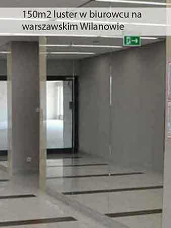
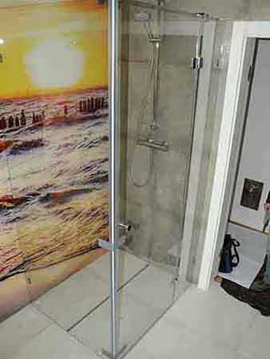
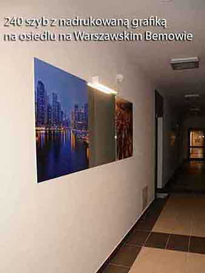
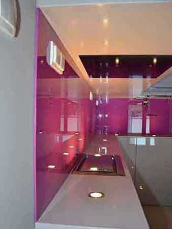
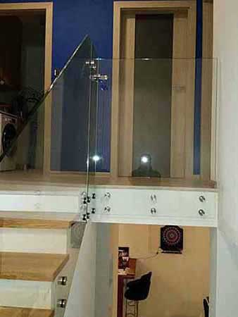
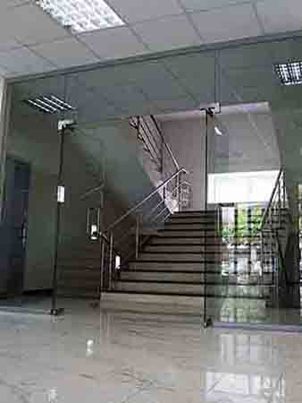

Usługi szklarskie Galaxy Glass
Ofertę detaliczną kierujemy do klientów indywidualnych z województwamazowieckiego. Zapewniamy fachowe doradztwo i
wsparcie architektoniczne. Znamy najnowsze osiągnięcia techniki oraz trendy, jakie panują w branży szklarskiej,
wykończeniowej i ślusarskiej. Jeżeli usłyszeliście Państwo od konkurencji, że jakiegoś zlecenia nie da się wykonać-
zapytajcie nas. Zapraszamy do zapoznania się ze zdjęciami niektórych realizacji, w jakich braliśmy udział.
Będzie to najlepsze potwierdzenie naszych możliwości oraz częściowa prezentacja jakości, jaką oferujemy.
Cenimy jakość, nie przesadzamy z cenami
Wszystkie prace wykonujemy zgodnie z obowiązującymi normami stosując dobre materiały takie jak kleje
Dow Corning, Lakma. Do konstrukcji szklanych wykorzystujemy na tyle wytrzymałe szkło, które spełni
nie tylko warunki wytrzymałościowe, ale również zapewni odpowiednią sztywność oraz komfort użytkowania.
Okucia np. zawiasy dobieramy w taki sposób, zeby ich trwałość sięgała wielu lat intensywnego użytkowania.
Nie boimy się stosować droższych europejskich producentów okuć.
Montaż
Doświadczony zespół pracowników gwarantuje doradztowo na każym etapie prac,
fachowość i wysoką jakość świadczonych usług montażu elementów szklanych.